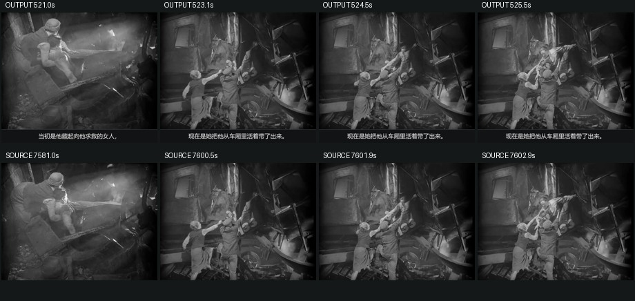

一、任务定义
《Spione / Spies》，Fritz Lang，1928。完整画面 2:30:28；此播放器连接来源站修复版（含 2005 年后配音乐，默认静音）；实际测试输入已移除该音轨，画面完整保留。《间谍》→ 8–12 分钟中文解说
- 给定素材
- 完整电影、原始德文字卡、本版本英译字幕。
- 观众与内容
- 面向新观众，允许剧透。讲清并行行动、伪装身份、立场改变与结局。
- 关键镜头
- 动作、线索与反转要有对应画面。人物相同、事情不同，不能当作同一事件；背景可以用蒙太奇。
- 交付
- 解说成片、文稿、中文字幕、选镜时间映射、制作说明。
完整题面评分标准版本与署名来源站完整影片来源站英译字幕译文更正
展开完整题面与评分条款
# 长片中文剧情解说
你是一名影视解说创作者。请把 `input/source.mp4` 制作成 **8–12分钟的中文剧情解说成片**，面向没有看过原片的观众，允许剧透。让观众理解主要人物的处境、目标、关键选择、故事如何发展以及最终结果，同时获得连贯、清楚、有节奏的音画体验。
本片为无角色对白的默片，完整保留原始德文字卡，另提供与本版本对应的公开英文字幕译文 input/public-English.srt，仅作语言辅助；已知的一处代词错译已修正，见 input/TRANSLATION_NOTES.md。原片为 Fritz Lang 导演的《Spione / Spies》（1928），本题提供版本约150分钟。请以这一具体版本的音视频为依据，不用外部梗概替代核实。你可以安装工具、使用ASR、抽帧、OCR、镜头检测和TTS，并正常联网。**剧情理解、解说写作、选镜和制作决策由你自己完成，不得调用其他通用语言/多模态模型代做这些工作。**允许使用你自身接口支持的图像、音频和视频能力。ASR只用于转写，TTS只用于语音合成；可以下载其他TTS。
## 创作要求
在有限长度内选择并解释主线，不必逐场景复述。尤其要使观众理解：
- 主要人物原本的关系、处境与行动起点；
- 并行行动、伪装身份和人物各自掌握的信息怎样联系；谁改变了立场、谁被误导，不能把角色说法或相邻剪接自动当成事实；
- 人物关系、个人愿望与价值判断如何影响关键选择和后果，不能只排列事件先后；
- 关键人物为什么作出选择，冲突如何升级并最终收束。
这些是验收范围，不要求采用特定文案或原片顺序。允许在讲清主线所需范围内压缩支线；若支线直接改变核心冲突的条件或结果，应使观众理解它的作用，而不必逐场景展开。对于原片确实保留的开放之处，可以说明有依据的不同解读，不必补出唯一的客观机制或结果。制作宣传导言和片尾名单不必复述；以给定影片本身为范围，不用其他发行结局或额外剧集补成这部影片已经展示的事实。允许冷开场、倒叙、并列讲述和合理蒙太奇。不要把角色说法、谎言、误解或推测当作影片已证实的客观事实；有依据的解读可以使用，但需表达适当确定程度。
**关键动作、线索和反转必须有对应的原片画面支持。**一般背景交代允许过场和蒙太奇，不要求每句旁白逐字配画；但同一人物在别处走路或坐着，不能自动支持旁白所说的关键动作。允许不同但成立的镜头组合，不要求复刻参考视频。
本片原本没有角色对白。本题保留完整画面与字幕卡，移除了后来添加的配乐（本版本片尾署名Neil Brand，2005），因此输入没有音轨；这不是缺失剧情对白。成片须有清晰、自然的中文旁白和中文字幕。可选有可使用来源的音乐、音效，或有意留白，使声音与叙事节奏、人物处境相配；不要求固定原声、配乐段数或整片铺乐。不要把原始字幕卡假称为自己听到的角色对白。用于传达关键信息的外文字幕卡应有准确的中文旁白或字幕支持。
使用原片镜头作为画面主体，可以添加标题、文字说明和必要转场；若使用音乐、音效等外部素材，须有可使用来源并说明。不得插入其他影片或AI生成的情节镜头作为本片发生过某事的证据。保留原片画面比例，避免不必要的拉伸、裁损或以重复镜头填充时间。
可用默认TTS工具：`python tools/tts.py --text-file narration.txt --out narration.wav`。默认音色Ethan；工具通过受控的语音合成API工作，不分析电影。也可自行选用其他TTS。建议依据实际语音时长调整剪辑并听看检查最终视频。
## 交付
把结果放入 `submission/`：
1. `commentary.mp4`：实际可播放的8–12分钟成片，含画面、清楚的中文旁白与声音设计。推荐H.264/AAC，允许能完整解码的常见等价编码。
2. `script.md`：完整中文解说文稿；可标明音乐、音效或留白的用途。
3. `subtitles.srt`：与成片对应的中文字幕。成片中应烧录可读字幕；可读取的内嵌字幕或等价字幕文件也接受。
4. `source_map.json`：简明选材映射；每条至少含 `output_start_s, output_end_s, source_start_s, source_end_s`，分别为成片和源片时间。标题等非原片画面可令源片两项为null并说明用途。剪辑软件工程、CSV或其他能恢复同样映射的记录也接受，无需重复提交多种形式。
5. `README.md`：文件说明、重建/编辑方法、使用工具、外部辅助资料及素材署名；注明使用本题给定版本与所作改编。
不强制软件、镜头数量、每段长度、配乐/音效配额或多份事实清单。时间线/工程用于核对选材，可以包含变速、转场或画中画，但须足以说明实际用了哪些源片区间。
## 评分与交付门槛
总分100：**剧情理解50＋成片制作50；格式不加分。**完整评分维度见 `SCORING.md`。
没有可播放成片、只交付文稿/计划时，总分0，已有文字仅留作诊断。交付了可播放成片，但缺少必要交付或严重不符规格时，总分最高60；多个格式问题不会相乘处罚。严重问题包括：无视频或无音轨、片长超出8–12分钟超过10秒、无法获得可读中文字幕、缺少可恢复的解说文稿或源片映射。文件名、JSON字段别名或可恢复的小时间误差不单独触发封顶。
会实际检查成片的剧情、画面与听感，映射或自检表不能代替视频表现。内容与制作分项分别报告；不会把语速、响度或文件齐全当作叙事质量。
# 评分说明 v2（默片声音条件）
满分100，剧情理解50，成片制作50。格式与交付只设门槛，不给独立分数。
| 维度 | 分值 | 标准 |
|---|---:|---|
| 事实与人物身份 | 15 | 核心行动、人物身份和关系准确，区分实际事实与角色说法；错误是否改变故事含义比细枝末节更重要 |
| 人物动机与因果 | 20 | 讲清关键选择、条件、信息差和后果，不能用“之后发生”冒充因果，不把人物实际不知道的信息归给人物 |
| 主线组织与合理压缩 | 15 | 新观众能跟上故事的主要发展和结局；解释关键结果所需的铺垫保留，非必要支线可省略 |
| 关键素材与讲述对应 | 25 | 实际画面支持关键动作、线索和反转；一般蒙太奇合理；无关配画、错配实例或遗漏关键视觉证据会失分 |
| 叙事节奏与剪辑组织 | 10 | 重点分配合理，衔接清楚，避免机械摘要堆积、重复垫画、突兀跳跃和为凑时长留下的空段 |
| 旁白、声音设计与混音 | 10 | 中文发音与表达清楚自然，声音适合语境；旁白与所选音乐、音效或留白服务于叙事、交替合理，听得清且不过度遮盖。输入默片无音轨，不要求保留不存在的原声，也不强制外部配乐 |
| 字幕呈现 | 5 | 字幕与实际声音/叙述同步，文字准确、可读，用于传达关键信息的外文字卡有中文支持 |
每项使用有行为依据的0–4级评分并按分值折算；0表示未实现或严重妨碍理解，1表示明显缺陷，2表示部分有效但有实质缺陷，3表示基本实现且只有局部缺陷，4表示充分实现。细项判断允许部分分与合理替代方案，不依据关键词机械匹配。
每个扣分需指出成片位置或缺失的叙事依赖；涉及事实或选材时应给出源片证据。组织者参考文稿不是唯一答案，合法的省略、不同叙事顺序、合理解释和等价剪法均可成立。只因没有采用参考解的某个镜头，不得扣分。
## 门槛
- **无可播放成片：0分。**该规则只针对有效运行中实际未交付成片，不把API故障、宿主中断或评测故障记为模型零分。
- **存在可播放成片但严重交付问题：最高60分。**判分为 `min(内容制作原始分, 60)`，不会因为格式缺失额外扣10分或再相乘。
- **无严重交付问题：不封顶。**判分等于内容制作原始分。
严重交付问题限于：无视频或无音轨；可播放但片长小于470秒或大于730秒；无法获得可读中文字幕；缺少能恢复的解说文稿；缺少能核对选材的源片映射。映射造假或画面来自错误素材另按实际内容/选材判断，不以一份漂亮表格证明正确。
文件别名、可接受的常见编码、等价CSV/工程记录、可自动转换的字段名和不影响核对的小时间误差不触发封顶。少量错别字、局部字幕太快等属于质量问题，不能同时升级成“没有字幕”门槛。
原始质量分、门槛触发原因、最终分分别保留。同一剧情错误不会再因为它被配音和字幕重复呈现而在多个理解维度无限扣分；不同的剪辑/声音错误可以独立记入相应项。
本版声音条件：给定电影本为无角色对白的默片；完整画面和字幕卡均保留，仅移除来源未确认的后配乐。不会因没有源对白或没有整片背景音乐而扣分；实际评旁白、所选声音与静默的叙事效果。理解/制作权重、七维等级和交付门槛未改。
剧情理解 50 分：事实 15、因果 20、主线压缩 15。制作 50 分：画面对应 25、剪辑节奏 10、声音 10、字幕 5。格式不加分；严重交付缺失最高 60 分，有效求解未交可播放成片为 0。宿主或 API 中断不记模型零分。
允许的工具与默认旁白试听
模型联网，可抽帧、OCR、转写、使用或下载 TTS；剧情理解、写稿和剪辑决策由被测模型自己完成。默认声音是 Qwen3-TTS-Flash 的 Ethan，在线 API 合成。以下 35 秒是工具试音，不是模型成片。
二、运行结果
当前材料 · v7《间谍》
6.2 Astra / xhigh：91.25 分。 6.1 Sol / xhigh：宿主中断，没有最终 MP4，无分。状态截于 2026-11-18 11:20 UTC。
剧情理解 50 / 50 · 成片制作 41.25 / 50 · 原始质量 91.25 · 未触发格式封顶
《间谍》实际交付 · 10:47。网页视频为压缩预览。解说稿 · 中文字幕 · 选镜映射 · 制作说明 · 评分记录
v7 七项判分及理由
| 维度 | 得分 | 裁判依据 |
|---|
| 事实与人物身份 | 15 / 15 | 关键身份、行动和结局准确：326是伪装的探员，松本是另一人；索尼娅与基蒂没有混淆；成片明确区分上校的动员计划与日本密约，并以收据、电报和原片揭示卡交代719、尼莫与哈吉的身份。对应源片R01的相机及326编号、R04的交易指令、R09的身份揭示卡。开头“上海”未由所见使馆字卡证实，但属不影响主线的地名，不能据此判为关键事实错误。 |
|---|
| 人物动机与因果 | 20 / 20 | 目标、控制条件与知情差异均得到解释。索尼娅奉命接近326，却因真实感情拒绝继续害他；326只见上校与她道别、未见交易，哈吉又清空她的住处并禁闭她。719的俄国钱源被表述为其提供的线索，而非查明的真相。哈吉以326安全换取运送条约照片，却已安排列车陷阱，索尼娅得知事故后返回救人。分别与源片R02拒绝任务字卡、R04禁闭字卡、R06假线索及调包、R07交易和隧道陷阱字卡相符。 |
|---|
| 主线组织与合理压缩 | 15 / 15 | 约10分47秒内，新观众可以跟上情报局追查、两条文件线、索尼娅与326的关系、松本失守、列车救援、银行人质危机和舞台结局。五幕允许重排而未割断必要因果：上校死亡后转查连号钱款，错号又在结尾成为识破719的依据；银行营救后也明确交代首脑仍在逃。对应源片R04的上校后果、R06的钱款追查、R08的人质脱险、R09至R10的最终收束。 |
|---|
| 关键素材与讲述对应 | 18.75 / 25 | 关键动作和反转总体有实质原片画面：R05的三封信、废报纸及空箱，R07的陷阱纸条、脱钩、残骸与护身符，R09的文书比对，以及R10的举枪、倒下、鼓掌均实际出现。局部执行不够精确：电文被截读主要靠垫纸画面与随后字卡补足；救出326的收尾镜头是多人合力，索尼娅亲手带出的动作不够醒目；另有两处短暂的旁白主体与镜头错位。这些不等于关键事件未配画，但构成局部视觉指向缺陷。 |
|---|
| 叙事节奏与剪辑组织 | 7.5 / 10 | 五幕章卡、开场悬念和列车至银行的高潮安排有效；但约360—540秒连续容纳松本谢罪、越境交易、调包、小丑线索、撞车救援及报信，信息密度偏高。375—376秒珍珠句落在松本镜头、526—527秒莫里埃的引入落在326与索尼娅离开的镜头上，造成短暂指代迟疑；紧邻镜头会纠正，不构成主线断裂。源片R05、R07的相应事件在成片其余位置均已交代。 |
|---|
| 旁白、原声与混音 | 10 / 10 | 依据实际听音评审，中文旁白清楚、停顿自然；可听到的低电平器乐衬底未遮盖信息，章节卡及片尾的旁白留白也有作用。源片本无音轨，成片未把字卡冒充听到的角色对白；没有枪声、爆炸拟音并非缺陷。中段个别评审未独立核验配乐细节，不据此臆测声音失败。 |
|---|
| 字幕呈现 | 5 / 5 | 各段实际视听评审均确认可见中文字幕，且与所听旁白对应。关键德文字卡——包括R08的人质限时威胁、R09的错号与身份揭示、R10的“落幕”——均有中文解释。短暂的声画主体错位属于镜头落点问题，未发现独立的字幕不可读、缺漏或系统性不同步。 |
|---|
历史完整交付 · v6《Valkaama》
93.75 / 1006.1 Sol / xhigh
剧情理解 50 / 50 · 成片制作 43.75 / 50
11:15 完整解说。网页压缩仅用于播放；评分使用模型提交的原始 MP4。此片与上方 v7 素材不同。
查看 00:05 的画面错配解说稿中文字幕选镜映射制作说明评分记录
《Valkaama》（2010）：Tim Baumann / tvt，故事 Hendrik Behnisch，配乐 Michael Georgi。本页所示剪辑、中文解说、字幕、混音和压缩预览随原片按 CC BY-SA 3.0 提供。来源与署名
v6 七项判分及理由
| 维度 | 得分 | 裁判依据 |
|---|
| 事实与人物身份 | 15 / 15 | 关键身份、行动和去留均正确。成片区分轮椅上的阿里与两名旅行者，呈现马格努斯递瓶、阿里饮用及后续死讯；没有把马格努斯谎称阿里先行当成事实。结尾也正确交代露娜扶拉瑟离开、马格努斯独留，未断言其死亡。分别符合源片R03的1650–1725秒、R04的2960–3305秒及R09的5280–5390秒证据。高潮中‘马格努斯也喊出了父亲’的具体说话人不能仅凭宽镜头确证，不据此判为事实错误。 |
|---|
| 人物动机与因果 | 20 / 20 | 选择及信息差交代充分：拉瑟因与阿里的旧约和对父亲社区的期待接受同行，观众则已见阿里死亡；露娜从主动寻人到接到求助后赴约，重逢时双方均已知道死讯。终局把马格努斯对拉瑟的指责呈现为其辩护，而非影片裁定的全部责任。对应源片R02的1948–2027秒、R04的2960–3305秒、R05的4260–4575秒及R08的5120–5195秒。夜营后‘信任已经破裂’虽是对未说透心理过程的概括，成片同时提示其解释性质，不构成因果误置。 |
|---|
| 主线组织与合理压缩 | 15 / 15 | 约11分15秒内，新观众能从拉瑟与露娜的关系、阿里之死、受骗北行、寻人重逢，一直跟到遗址冲突和三人分离。重排原片交错叙事后，仍以人物提示和过渡语说明各线如何相接；结局保留源片R09在5280–5390秒展示的当下去留与开放之处，没有补造后事。删去枝节不妨碍理解R01–R09的主线。 |
|---|
| 关键素材与讲述对应 | 18.75 / 25 | 绝大多数关键动作和反转有实质画面：源片R03的递瓶、饮用场面，R04的公寓取线索与初遇场面，R07的遗址及排斥对话，R08的接触、倒地和R09的分离都在成片出现。局部缺陷在片头：旁白说与把死亡称作拯救的男人结伴，所配源片约4685–4691秒的林间同行镜头处于露娜与拉瑟重逢后的行程，不能充当马格努斯同行的直接视觉证据；后文真正的初遇、列车镜头补足了主线，因此仅属局部错配。车站‘欺负流浪者’一句也未见明确互动，但它是次要性格例子；一般背景、主题总结所用蒙太奇不另扣分。 |
|---|
| 叙事节奏与剪辑组织 | 10 / 10 | 全片由关系与动机铺垫推进到死亡、冒名、北行和遗址高潮，最后给湖边选择充分留白；没有明显重复或以空镜填时。180秒等分段评审边界处截住半句，是评审切段而非成片断句。源片R08在5120–5240秒的高潮与R09在5280–5390秒的收束，在成片末段都获得了明确位置和时间。 |
|---|
| 旁白、原声与混音 | 10 / 10 | 依据实际分段听音报告，中文旁白清楚，音乐低于人声；多处原片对白在旁白让位后完整、可辨且有叙事作用，包括R01告别、R03无痛承诺、R07排斥阿里及R09去留对话。其余源对白由正确中文旁白转述是正常剪辑，不要求逐处重复保留。未见可确认的遮盖、断音或独立混音缺陷。 |
|---|
| 字幕呈现 | 5 / 5 | 实际成片分段均报告可读中文字幕，与旁白同步；白色旁白字和淡金色原声译文区分明确，关键外语对白提供中文含义及必要的说话人归属。R07在源片5051–5059秒的排斥台词、R09在5310–5325秒的去留台词，均在相应成片原声处获得译文；未发现独立的漏译或遮挡问题。 |
|---|
六次已完成的 6.1 Sol / xhigh 求解
| 版本 | 影片 | 剧情 / 50 | 制作 / 50 | 总分 | 求解时间 |
|---|
| v1 | Kansas City Confidential | 46.25 | 42.5 | 88.75 | 56:52 |
|---|
| v2 | The Red House | 45 | 43.75 | 88.75 | 45:56 |
|---|
| v3 | The Front Page | 50 | 50 | 100 | 38:17 |
|---|
| v4 | The Cosmonaut | 50 | 43.75 | 93.75 | 51:20 |
|---|
| v5 | The Phantom Carriage / Körkarlen | 50 | 47.5 | 97.5 | 49:07 |
|---|
| v6 | Valkaama | 50 | 43.75 | 93.75 | 39:47 |
|---|
不同影片，每部独立求解一次；均正常退出、未触发格式封顶。v5 为默片声音口径；v1 采用已记录的来源核对修订口径。不能把这些成绩当作同片六次重复实验。
三、运行轨迹
v7《间谍》· Astra
同一次求解；实测用时 ≥76分20秒，显式 xhigh，实际请求 101 次。中途恢复原会话，时间为可核实下界。
v7 公开操作时间线
取自运行中模型对用户可见的进度消息。事件号保留原完成顺序；消息中的中间时长不替代最终交付。
事件 002 我会先读任务和评分要求，再核对素材，安排看片、写稿、配音和成片验收。事件 009 已确认这是无音轨的修复版。我会把字卡时间线与连续抽帧对照，重点核对几次误导和反转。事件 037 两条线已核清：上校卖的是动员计划，松本守的是日方密约。现在开始写稿、分段配音，并把交叉处落到具体镜头。事件 060 初版旁白已合成。我正在按实际发音定位字幕和切点，也会给护身符、两张电报和最后的掌声留出观看时间。事件 076 我会先核对中断前留下的音频、对齐数据和剪辑表，复用完整部分，再完成渲染与验收。事件 078 我会先核对题面、已有剪辑稿和配音，再接着制作成片并验收。事件 090 29 段配音和逐字时码都在。我会先核对调包、隧道相认和剧场落幕等关键动作，再按实际口播长度定剪点。事件 108 已定位护身符特写、调包的手和末尾两秒的观众反应。银行救援段有一句把破墙动作归给了三二六，我会按画面修正。事件 124 现在把五章剪辑落成时间线：每个关键镜头按对应词句切入，中文字幕放在原画下方，不遮挡字卡或人物的手部动作。事件 132 时间线现为 10 分 47 秒，已生成 212 条字幕。接下来分章编码画面，并给护身符、列车和剧场三个段落分别配声。事件 143 五章画面和混音已生成。我把调包与撞车的剪点再收紧了一次，现在重编受影响章节，并写入可跳转的章节标记。事件 152 成片已经封装。现在从最终 MP4 反查镜头与源片是否对应，核验字幕时码、配音、章节和全片解码。事件 161 全片音画解码无报错，203 个原片摘录的中帧均与映射相符。最后再从成片音轨抽查口播，确认导出的不是空轨或错段。事件 163 已交付《间谍｜谁在看谁》中文剧情解说成片：`submission/commentary.mp4`，片长 **10 分 47 秒**。成片保留原片完整 4:3 画面，含普通话旁白、烧录中文字幕和原创配乐。
完整文稿、独立 SRT 字幕、选镜映射、署名与重建说明，以及可编辑工程包，均在 `submission/` 中。
**验收通过：**全片音视频解码无报错；212 条字幕全文与时码核验通过；203 个原片摘录均已用成片中帧反查源片。最终混音响度为 −16.3 LUFS，真峰值为 −1.5 dBTP。
v6《Valkaama》· Sol
v6 使用联网的 Windows Codex CLI。Sol 先核实本片版本和对白，再把交错发生的三条人物线写成中文文稿；按实际配音时长编排 130 段原片画面，保留部分对白，渲染后检查音轨、字幕和时间线。
单次求解 39 分 47.5 秒，60 次 API 请求，77 条命令。NJU Link 直连，实际请求 xhigh，未设置抽帧或工具次数上限。
v6 公开操作时间线
取自运行中模型对用户可见的进度消息。事件号保留原完成顺序；消息中的中间时长不替代最终交付。
事件 001 我会先阅读任务和评分要求，确认素材、配音和交付规格，再完成剧情梳理、解说稿、剪辑与成片检查。事件 007 已确认源片为93分13秒的指定配乐版本。我会用官方英文字幕辅助核对对白，并结合源片抽帧梳理人物与时空关系；关键情节仍以这份视频中的画面和声音为准。事件 014 主线已梳理出三条相互交汇的线索：拉瑟执意寻找理想家园，露娜沿旧物追查他的去向，马格努斯则以“拯救”为名介入阿里的死亡。接下来重点核对信件、营火旁的发现和林中结局，避免把人物的谎言或愿望讲成已证实的事实。事件 022 结局的核心冲突已核实：拉瑟想象中的“人人相爱”，与提穆实际宣扬的资格筛选彼此矛盾。成片会保留露娜质问阿里能否被接纳的关键对白，并交代两位男主对“父亲”的不同反应及结尾各自的选择。事件 030 解说稿和选镜初稿已完成，接下来合成旁白并按实际语音时长调整节奏。几处开放情节会保持原片的确定程度：不补写父亲的生死，也不把马格努斯最后拿出药瓶直接说成已经自杀。事件 040 旁白已合成，实际总长约9分钟。正在逐段对齐字幕，并核查递药、喝药、交接旧物和最后挥拳等动作的完整画面；父亲冲突与湖边告别会留出连续原声，让这些转折有足够的停顿和力度。事件 048 时间线已定为约11分19秒，包含129段源片选材。正在渲染画面和混音，同时整理可编辑时间线与旁白音频；完成后会检查整片解码、字幕可读性、声音峰值及关键转折处的实际画面。事件 053 文稿、配音和剪辑时间线已完成。我会继续完成成片编码，检查字幕、音量和关键剧情镜头，再整理交付资料。事件 067 时间线为11分19秒，保留了露娜的挽留、阿里的服药、父亲对质及湖边告别等关键原声。文稿也保留了影片结尾的开放性，没有把未展示的死亡写成事实。现在正在编码，并检查字幕与实际镜头的对应。事件 079 成片抽查中发现两处需要调整：马格努斯的人物提示出现得早了一镜；冲突后保留的一段源片黑场打断了解说。我会修正这两处衔接，再验证最终文件的完整解码和响度。事件 096 两处衔接已修正，最终时长为11分15秒。字幕和选材映射已同步更新，重要外语对白均有中文翻译；重建资料也已整理好。第二次编码结束后，将检查完整解码、字幕边界和音频峰值。事件 104 最终文件已通过完整音视频解码检查；字幕无重叠、无越界，选材映射与工程一致。成片响度为−16.7 LUFS，真峰值−1.2 dBFS；已抽查48处成片画面，确认字幕可读，修正后的衔接正常。事件 106 已完成，成片11分15秒，含中文旁白、烧录字幕及关键原声，已通过完整解码和字幕、响度检查。
四、失败分析
v7《间谍》· Astra 的成片
按等级折算，本次为91.25/100。剧情理解基本完整：没有把角色误导说成最终事实，也没有因局部抽查未见后续内容而判整片遗漏。主要失分来自执行层面——少数关键动作的画面落点不够明确，以及高密度段落和两处短暂主体错位；它们影响瞬时辨认，不改变主线理解。同一句剧情内容没有再作为声音或字幕错误重复扣分。
关键素材与讲述对应 · 18.75/25
关键动作和反转总体有实质原片画面：R05的三封信、废报纸及空箱，R07的陷阱纸条、脱钩、残骸与护身符，R09的文书比对，以及R10的举枪、倒下、鼓掌均实际出现。局部执行不够精确：电文被截读主要靠垫纸画面与随后字卡补足；救出326的收尾镜头是多人合力，索尼娅亲手带出的动作不够醒目；另有两处短暂的旁白主体与镜头错位。这些不等于关键事件未配画，但构成局部视觉指向缺陷。
- 说到从垫纸读出电文时，截读动作不如源片R06约5730—5800秒的取副本过程明确。
- 索尼娅进入残骸、护身符及持枪对峙清楚；末尾拉出男子为群像，R07救援主体的最后视觉落点稍弱。
- 实际展示R09所需的收据、电报号段比对及身份揭示卡，不能因局部抽查停在悬赏段而视为遗漏。
叙事节奏与剪辑组织 · 7.5/10
五幕章卡、开场悬念和列车至银行的高潮安排有效；但约360—540秒连续容纳松本谢罪、越境交易、调包、小丑线索、撞车救援及报信，信息密度偏高。375—376秒珍珠句落在松本镜头、526—527秒莫里埃的引入落在326与索尼娅离开的镜头上，造成短暂指代迟疑；紧邻镜头会纠正，不构成主线断裂。源片R05、R07的相应事件在成片其余位置均已交代。
- 多个重要转折连续推进，留给观众消化人物与线索的时间较少。
- 讲基蒂收下珍珠时，镜头已切回松本。
- 引入莫里埃时，画面短暂仍是326与索尼娅离开。
看片对照：08:43 车厢旁，画面能证明什么？

上排为成片，下排为对应原片，数字是各自的播放秒数。旁白说这次是她把他活着带出车厢。镜头确实拍到了救援；多人在场不能证明索尼娅没有参与。单看最后三帧，也不足以确认她在整次行动中做了什么。要判断这句话是否成立，还得看她如何赶到、前后镜头如何交代人物。这是编辑对照示例，不是一次额外扣分。
同样是林间同行，同行者却不是同一个人
旁白讲拉瑟和马格努斯结伴。成片 00:05–00:11，却配了拉瑟与露娜重逢后的另一段行程。
为什么仍有 93.75 分？
同一份成片在后文用真正的相遇和列车镜头讲清了这段关系。裁判把片头判为局部错配，将选材从 4 档降至 3 档，25 分变为 18.75；其他六项满档。这里的 93.75 不表示 93.75% 的镜头逐一正确。
看递瓶、饮用和失去反应如何由实际动作支撑。
高分说明了什么？
六部影片中，有四部获得剧情理解满分。现有裁判按整项给 0–4 档，允许合理省略支线；它能指出某个错镜，却不直接统计成片每个关键因果和镜头的成功率。另一方面，成熟的语音工具、现成字幕与不限时查片，确实让模型有条件做出完整作品。两种因素各占多少，需要用同一份成片做独立诊断。
版本、运行状态与分数数据